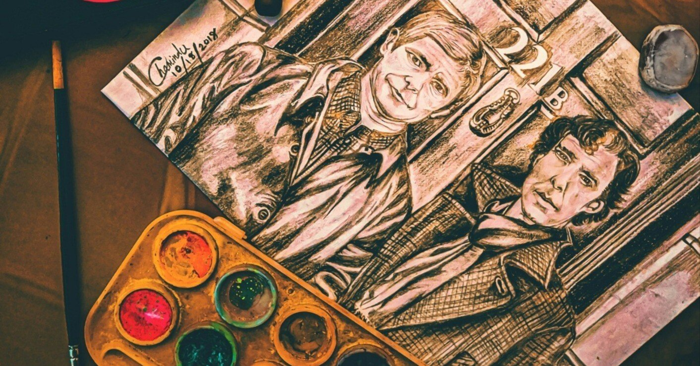

探偵物の代名詞ともいえる、『シャーロック・ホームズ』シリーズ。
19世紀後期に名を上げた、英国の医師であり作家のアーサー・コナン・ドイルが創作した本シリーズは、生まれてから100年以上が経った現在も絶大な人気を誇る伝説的作品群。今でも世界中に“シャーロキアン”と呼ばれる多くのファンがおり、何を隠そう僕もそのうちのひとりである。
名の知れた小説の運命として、“ことあるごとに映画やドラマ、舞台等で実写化される”というものがある。
かくいう本シリーズも相当数の実写化作品が名を連ねる。もしかしたら、皆さんにも思い入れのあるシャーロック・ホームズとジョン・ワトソン役の俳優がいるのかもしれない。
そんな実写化の歴史が長い本シリーズの中でも僕が紹介したいのが、2010年から2017年にかけて英国の公共放送局・BBCにより放送された『SHERLOCK』。「現代にシャーロック・ホームズとジョン・ワトソンが生きていたら」というifドラマだ。
舞台が19世紀から21世紀に移ったことで大きく変わったのが文明の利器。
原作では辻馬車での移動が多いが、このドラマではほとんどのエピソードでタクシーに乗り込んでいる。また、2人が主な情報源としていた新聞はスマートフォンに。
そして、原作ではジョン・ワトソンの事件記録をもとに物語が進行するのだが、本作では彼が事件を題材にWeb上でブログを書いており、作中でもその人気ぶりが窺える。まさに現代の有名ブロガーといっても差し支えない。
こうした変遷を見ていると、この2人をより身近に感じることができる。そう、視聴者はまるで2人と同じ時代に生きている感覚に陥るのだ。
本作でシャーロック・ホームズを演じるのは、ベネディクト・カンバーバッチ。
作中では自身を「高機能ソシオパス」と称しながらも、その内実は自信家そのもの。誰もが認めるほどの頭脳を持ち合わせるが、周囲を小馬鹿にしているため交友関係は非常に少ない。
気難しい性格ながらも相棒とともに難事件に挑むたび、彼自身の心境も少しずつ変化していく。
今でいう「コミュ障」の彼が徐々に社会との付き合い方に慣れていく過程は、個人的には事件解決の名推理と同じくらい見応えがあった。その様を実に細やかに、そして見事に演じている。
そして、その相棒のジョン・ワトソン役にはマーティン・フリーマン。
従来のワトソン像である“自然体な常識人”という一面を持ちながら、誠実かつ勇敢で惚れっぽい、人情味溢れる側面も併せ持つ。
はじめはシャーロック・ホームズの身勝手で常軌を逸した行動に振り回されることも多かったが、一緒にいるうちに彼の癖を把握し、やがて阿吽の呼吸で数々の事件を解決に導いていく。
シャーロック・ホームズと出会ってしまって不憫にすら思えた彼の境遇も、終盤には最高のバディに見えたのは言うまでもない。もちろん本作に特別な思い入れがあってこそなのだが、僕の中の不動のジョン・ワトソン役は、もう彼しか思い浮かばないほどなのだ。
定期的に何度も繰り返し観返すドラマはいくつかあるが、『SHERLOCK』もそのうちのひとつ。
比類ないほどの高い質で展開されるミステリー作品でもある本作は、現時点で4シリーズが製作。そのどれもに原作のエッセンスが散りばめられているわけだが、特に僕が好きなのがシリーズ3。
観返す時は全編通してのこともあるけど、実はこの“3”だけの時もある。それだけ僕にとっては特別なシリーズなのだ。
宿敵であるジム・モリアーティとの対決で、なんとか勝負には勝つものの、ついには高層ビルの屋上から身を投げたシャーロック・ホームズ。その一部始終を見ていたジョン・ワトソンは心に大きな傷を負ってしまう。
しかし、2年の時が経ち、徐々にその傷は癒されていた。また、彼には恋人もできていた(ちなみに恋人役は、当時マーティン・フリーマンと実際に交際していたアマンダ・アビントン)。
そして、いよいよ彼女にプロポーズをしようとしていたレストランの席で、実は生きていた相棒と再会する……という一幕からシリーズ3が始まる。
この始まりが、実に面白いのだ。
原作でもジム・モリアーティとの対決で命を落としてしまったかのような描写があるシャーロック・ホームズ。実のところ、作者は主人公である彼の死をもって作品を完結させるつもりだった。
しかし、当時の読者から「まだ続きを読みたいから、死なせないでくれ」といった旨の手紙が多く届いたことや、毎週のようにシャーロック・ホームズの葬式が各地で行われたこともあり、ついには生き返らせたという裏事情がある。
そして、そんな読者らのおかげで蘇った彼はすんなりジョン・ワトソンに許されるのだが、『SHERLOCK』では違う。
本作では「どんなにつらかったと思っているんだ」と激しく憤り、ついには頭突きを何度も浴びせる。
相手を信頼しているから彼は正直な怒りをぶつけることができたのだろうし、それを「悪かった」と素直に謝るシャーロック・ホームズにこそ、本作の魅力が詰まっているようにも思える。そう、2人は巨悪を相手に奮闘する最高のバディでありながら、ほかの誰にも替えの利かない親友でもあるのだ。
原作と同様にほとんどの実写化作品ではともに“ホームズ”、“ワトソン”と呼び合うことが多い中、本作では“シャーロック”、“ジョン”と互いをファーストネームで呼び合う。
それが作品のタイトルにもなっているわけだから、その友情もこの物語のテーマのひとつなのだろう。固い絆で結ばれた2人の勇姿が、この先も廃れることなく多くの人たちを魅了していくことは間違いなさそうだ。
https://www.youtube.com/watch?v=affZelwfzqE